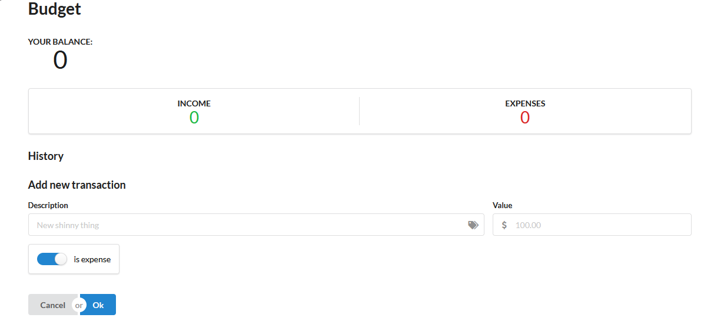

As a Philadelphia native I was radicalized at a young age although it would be many years before I understood what it meant to act and organize effectively. It took me even longer to realize that I was trans. Despite my christian upbringing I have been able to find new found love and joy in my own skin.
I am a highly motivated, passionate and hardworking software developer. Incredibly experienced in the full life cycle of the software development process including requirements gathering, designing, coding, testing and maintenance. Quick learner, willing to embrace new challenges, and eager to learn and grow as a software developer.
From either running multiple clubs on their college campus, to organizing multiple political movements, structural communication is Maxandus' game. Effective at connecting people from different backgrounds and acting as a bridge to help better facilitate large networks and getting things done.
While working on computers the task that needs to be fixed isn’t always straight forward, it requires an analytical mind to solve these problems. Can predict problems that arise later and write code to anticipate complications that may not be obvious right away.
Incredibly compotent in many programming languages such as: Java, JavaScript, Python, HTML/CSS, PHP, SQL, C#, Visual Basic, .Net Development, ReactJS, GIT and more. Additionally skilled at many computer applications including but not limited to: Microsoft Office, Adobe Suite, Visual Studio, SQL Server Management Studio, Microsoft Office, AWS, Twin Cat TcXaeShell, and Zoom

I can't wait to hear from you!